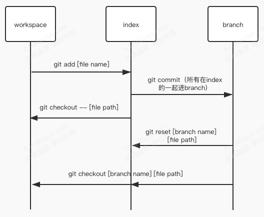

git对文件和commit的操作命令简介
oh-my-zsh plugins
FEer应该都配了iterm2、zsh、oh-my-zsh。毕竟mac的terminal难用的一笔…开始前先提oh-my-zsh的plugins是因为它默认给了个git的plugin，提供了海量alias。非常好用！
oh-my-zsh源代码在~/.oh-my-zsh（可以通过echo $ZSH查看）配置文件在~/.zshrc。
git 插件提供的alias
两种方法查看
- 看
~/.oh-my-zsh/plugins/git/README.md或者同目录下的git.plugin.zsh - 命令行直接输
alias | grep git看所有的alias
常用的status、fetch、pull、push都有简短的alias，可以用起来提高敲命令效率，并且有些alias可以看做最佳实践比如alias glol="git log --graph --pretty='%Cred%h%Creset -%C(auto)%d%Creset %s %Cgreen(%cr) %C(bold blue)<%an>%Creset'"
当然vscode已经有了一键显示commit history的功能了…
其它常用插件（还有推荐的欢迎补充）
wd：设置路径别名，可以直接到达
1
2
3
4
5
6
7~/work/developer-product $ wd add pro
~/work/developer-product $ wd list
* All warp points:
pro -> ~/work/developer-product
~/work/developer-product $ cd ~
~ $ wd pro
~/work/developer-product $z：记录路径频率，之后输入路径部分名字就可以进入（和autojump一样效果，就是z不用另外安装）
1
2~ $ z pro
~/work/developer-product $zsh-syntax-highlighting（需要另外安装）：命令高亮
zsh-autosuggestions（需要另外安装）：记录历史输入的命令并提供输入建议，按→上屏
last-working-dir：打开新的session自动到当前目录（当前目录指的是最后cd的目录，不是当前窗口的目录）
不用另外安装的直接在~/.zshrc的plugins=(git xxx)里面写就好了，空格分隔。要另外安装的除了要在这里面写一下以外还有clone相应代码到oh-my-zsh的custom的plugins下：
1 | git clone https://github.com/zsh-users/zsh-syntax-highlighting.git ${ZSH_CUSTOM:-~/.oh-my-zsh/custom}/plugins/zsh-syntax-highlighting |
1 | git clone https://github.com/zsh-users/zsh-autosuggestions ${ZSH_CUSTOM:-~/.oh-my-zsh/custom}/plugins/zsh-autosuggestions |
对文件的操作【全都是高危命令】
首先解释下“高危命令”，就是会使你的代码找不回来的命令，所以每一个都要想清楚在使用！
对于覆盖workspace的命令vscode可以直接撤销编辑，所以建议在打开vscode并且打开那个文件的情况下使用，手滑了还能撤销…（这里推荐下vscode一个插件Local History，会隔一段时间记录文件变动）
三个区域命名约定：工作区：workspace；暂存区：index；仓库的某个分支：branch。
变量命名约定：命令中[xxx]这里xxx是变量，后面说明的[xxx]也表示命令中的变量
常用命令
checkout
git checkout [branch name] [file path]用
[branch]的[file]覆盖workspace和index的[file]，强制覆盖git checkout -- [file path]用index的
[file]覆盖workspace的[file]，强制覆盖
reset
git reset [branch name] [file path]用
[branch]的[file]覆盖index的[file]，强制覆盖
注1：当前分支[branch name]用HEAD。
注2：好像没有从HEAD绕过index到workspace的命令。

场景
查看某个文件和另一个分支的差异。(reset)
merge出现冲突爆炸后抢救一下。(checkout)
类似于merge参数 -X theirs，然后可以手动吧自己的改动加上去
对commit的操作
常用命令
cherry-pick
git cherry-pick [commit id]（多个commit空格分隔）把某个commit添加到当前commit后面。
因为一个commit记录的是与上一个commit的差异，所以可能pick完会有冲突，手动解决冲突后可以自己走add->commit流程也可以add完后
git cherry-pick --continue（建议用continue），一般来讲冲突会出现在某个文件有多次改动但是只pick了其中某一次的改动，但并不建议这么做。就是说如果cherry-pick出现冲突了那思考下有没有别的解决方案。
-
git rebase [branch name]找到当前分支和目标branch的分叉点然后把分叉点到最新的commit一个一个附加到目标branch的最前面。中间可能会出现无数个冲突，解决冲突后
git rebase --continue改变主意了不想rebase了就git rebase --abortgit rebase -i [commit id]整理这个id之后的所有commit。执行后会出现一个文件让你编辑，那个文件的下面会有每个命令的说明。一般来说就为了把多个commit合并到一起的话就
git rebase -i HEAD~3然后出现三个pick，第一行pck改成r，下面两行pick改成s就完事了，后面编辑message然后保存就行。
reset
git reset [--soft/hard] [commit id]没有任何参数就移动HEAD指针到对应commit，并重置index。从那个commit到最新的commit的那些改动全部放在工作区。加上–soft是不重置index，那些改动全部在index和工作区。加–hard是重置index和工作区。
revert
git revert [commitid]自动生成一个commit，内容与
[commitid]对应的commit相反。注意：revert一个比较久远的commit时有很大概率会有冲突。另外，如果revert一个merge commit，那么那个commit的内容就再也merge不进去了。除非把revert产生的commit再revert掉。git revert [较旧的commitid]..[较新的commitid]把区间（左开右闭）内的commit全部revert了。新旧commitid顺序反了会报错。左开右闭指的是较旧的commit不会revert，revert从较旧的后面那个开始到较新的commit，revert的顺序是从新到旧的（commit顺序反一下）
场景
- commit错分支了（cherry-pick + reset hard 或者reset + checkout）
- 合并commit/美化commit树（rebase）
- 把仓库炸了（reset / revert / 删了重拉）
工作流
常用命令
stash
git stash push把index的内容放入暂存区
git stash pop把暂存区的内容放回index然后从暂存区删除，如果出现冲突则需要手动解决冲突并且不会删除暂存区，要手动drop
git stash drop删除暂存区最新一个stash，可以指定id：
git stash drop stash@{[id]}，id通过list命令获取。注意每次删除stash后id会修改，id恒为0开始的数列，删了stash@{2}那么原本的stash@{3}就变成了stash@{2}，后面依次往前挪git stash list列出stash列表，最前面显示的是id
git stash show --text stash@{[id]}查看stash内容
worktree
git worktree add -b [new branch] [new fold path] [from branch]创建一个worktree关联
[fold]与[branch]。[from branch]省略的话默认是HEAD。等效于在
[fold]下又clone了一份代码并且切换到[branch]分支（不完全一致，比clone一份更优雅）。然后我们cd到[fold]里会发现就是[branch]分支（不cd到[fold]在原路径是无法checkout到新分支的）git worktree add [new fold path] [branch]上面命令的简化版。创建一个
[fold]并关联[branch]，[branch]必须已存在（其实给个commitid也可以）。不给出[branch]就从HEAD切一个分支，分支名为文件夹名。git worktree list列出所有的worktree
git worktree prune删除文件夹已经被删的worktree。
把以下代码加到~/.zshrc末尾。函数名即为命令名，可以自己换一个顺手的。对应项目的.gitignore要加上node_modules（注意结尾没有/）、.worktree。
使用：gwta [new branch name] [vscode name]（一般不需要第二个参数…）
效果：以输入的分支名从origin/master切一个新的worktree。如果输入的分支在远程存在就从远程拉取并建立关联。
我中间加了行输出有颜色的echo，可以明确分支远程是否存在echo -e "\e[1;32m create worktree from [ $BRANCH ] in '.worktree/$1' \e[0m"
1 | function gwta() { |
场景
- 某项目开发一半同仓库下临时有个bug要改。
- 同个代码仓库下同时有一大堆需求要做。
这两场景其实一个意思。用stash的方案就是先git stash push，然后该干嘛干嘛。好了之后回到feature分支git stash pop。这样看上去很方便但是如果需求一多反复push、pop是很麻烦的。。。
worktree提供了更优雅的方案，先用以上函数创建worktree。（我这边是gwta，你可以改函数名改成自己顺手的命令…）代码会在当前目录.worktree下，并且已经建立好了node_modules的软链。cd到里面的目录正常add->commit->push完事。发布完成后可以删除这个目录，然后在原目录执行git worktree prune就会删除这个worktree。然后在外面就可以切到新的分支了。